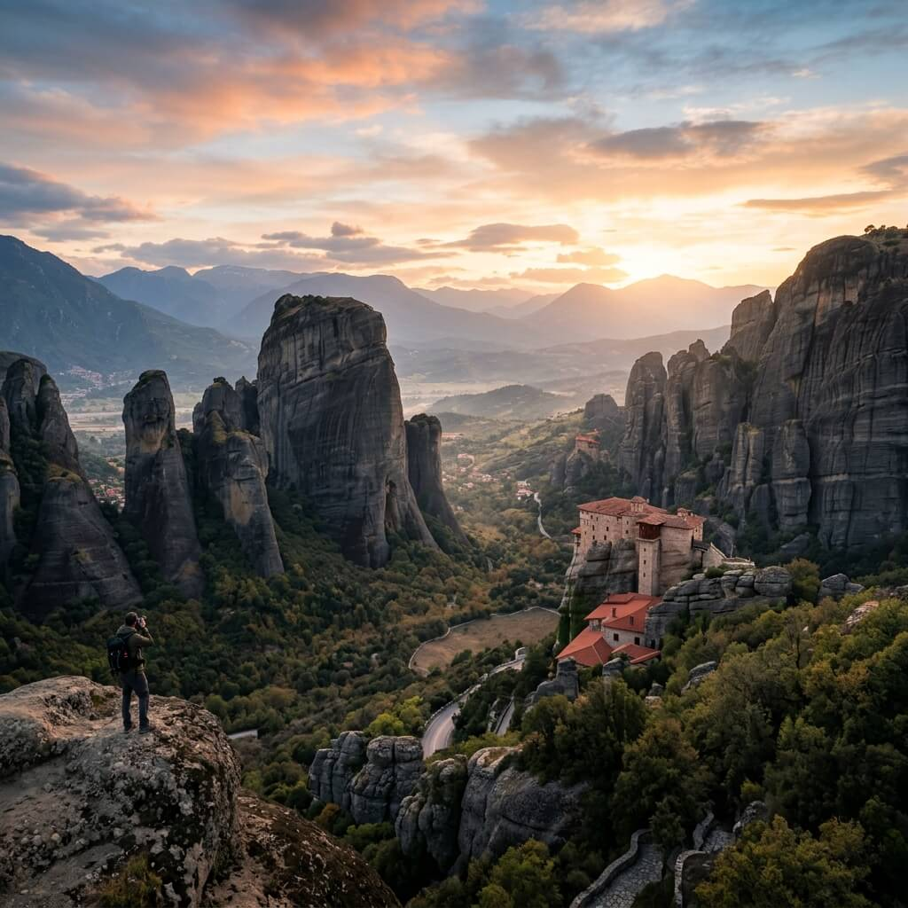
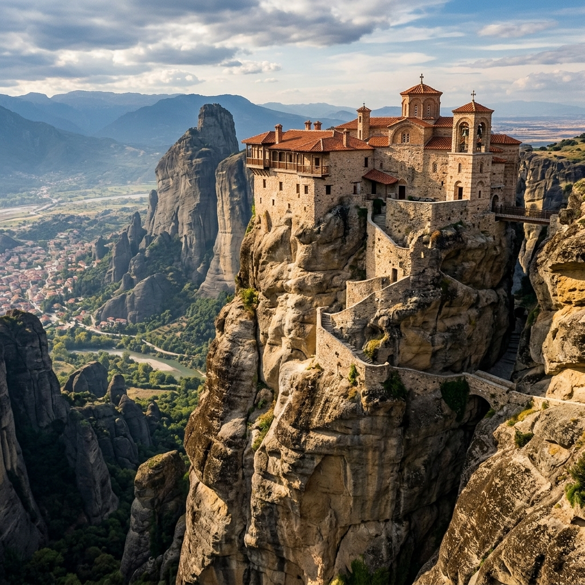

Taxi & Van Transfers
Uno spettacolo visivo unico. Visita i monasteri bizantini sospesi su giganti pilastri di roccia.
Meteora, che letteralmente significa "sospeso nell'aria", è uno dei luoghi più sacri e suggestivi della Grecia. Questo tour privato ti porterà attraverso la pianura della Tessaglia fino alle colossali colonne di roccia dove, a partire dal XIV secolo, i monaci costruirono i loro monasteri in cerca di solitudine e protezione.
Rimarrai incantato dall'architettura bizantina, dagli antichi affreschi e, soprattutto, dalle viste panoramiche mozzafiato. Un viaggio che unisce spiritualità, storia e natura nella sua massima espressione.
Patrimonio dell'Umanità
Paesaggi d'un altro mondo
Il tuo autista privato ti verrà a prendere presto ad Atene per un viaggio di circa 4 ore, attraversando splendidi paesaggi rurali e montani.
Visiteremo 2 o 3 dei monasteri più significativi (come il Gran Meteoro, Varlaam o Santo Stefano), a seconda dei giorni di apertura.
Faremo soste strategiche nei migliori belvedere per permetterti di scattare foto spettacolari dell'intero complesso roccioso.
Goditi del tempo libero per un pranzo tradizionale nell'incantevole cittadina di Kalambaka, situata ai piedi delle rocce giganti.
Sulla via del ritorno ad Atene, possiamo fare una breve sosta al monumento al Re Leonida e ai 300 spartani.

